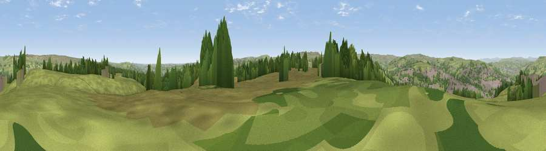

Viewpoint near Long Lee
#18118 in England · top 25% of its area beats it · near Long LeeWhere it is
The exact computed spot (SE 07025 39175). Click the marker for map links.
The view, rendered

A 360° render of this exact spot computed from the terrain model, tree cover and land cover — summer colours, afternoon light, calibrated against photographs of famous viewpoints. Real trees, hedges and buildings will differ in detail.
The panorama
Grey silhouette: terrain skyline in each direction (720 bearings, Earth curvature and refraction included). Dashed green: skyline with trees (+15 m) and buildings (+8 m) as obstacles. Blue strip: how far the ground is visible on each bearing.
Where the view opens
Wedge length = distance to the farthest visible ground on that bearing (vegetation-aware). Rings at 10, 25 and 50 km.
What fills the view
69% grassland · 18% woodland · 12% built-up
Angular shares of the visible panorama (visual magnitude), not map area. Landscape diversity 0.36 (0–1 Shannon).
Key numbers
More beautiful places nearby
The staircase of upgrades: each row has a higher view potential than everything closer. Driving times are estimates from straight-line distance, calibrated against real road routing — check an actual route before setting out.
| Place | Direction | Drive | Score |
|---|---|---|---|
| Viewpoint near Long Lee | NNW · 1 km | ~2 min | 56.4 |
| Viewpoint near Laycock | NW · 4 km | ~10 min | 59.7 |
| Viewpoint near Riddlesden | N · 5 km | ~11 min | 61.8 |
| Viewpoint near Riddlesden | N · 5 km | ~12 min | 67.5 |
| Viewpoint near Baildon | E · 7 km | ~15 min | 70.4 |
| Viewpoint near Stump Cross | S · 12 km | ~22 min | 71.5 |
| Viewpoint near Otley | ENE · 14 km | ~25 min | 77.5 |
| Darwen Hill | WSW · 43 km | ~63 min | 80.7 |
53.84877, -1.89470 · source: screening · position refined by local search. Computed location — check access rights before visiting.